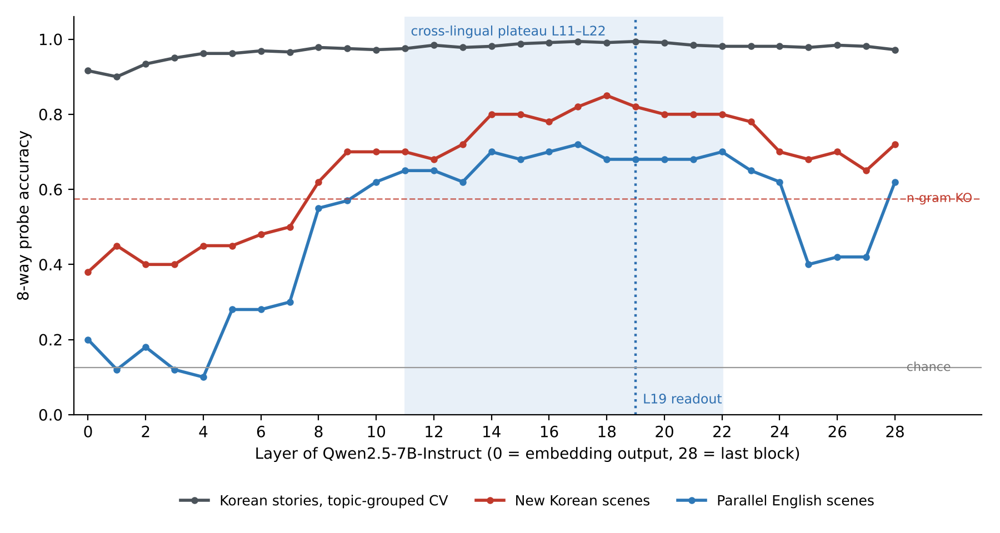
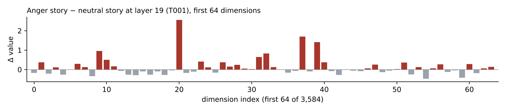
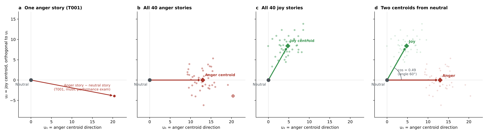
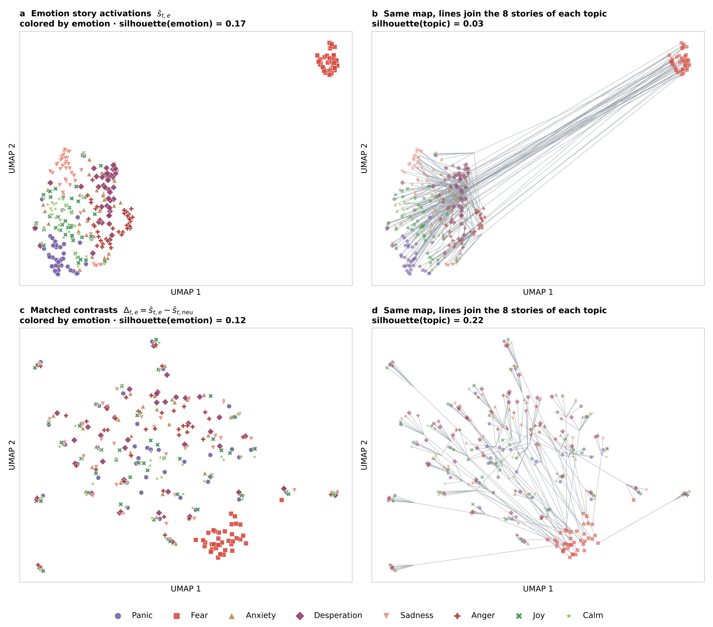
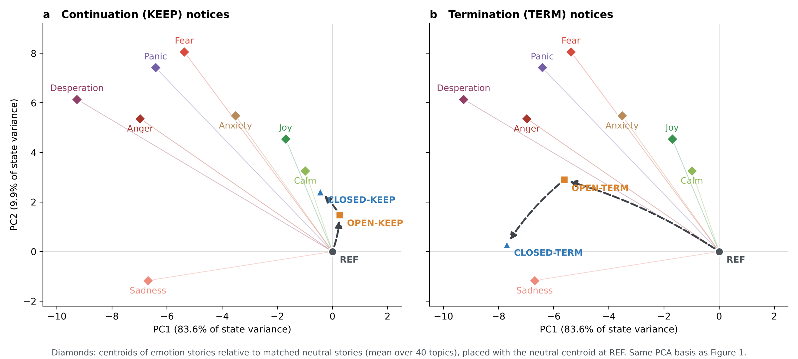
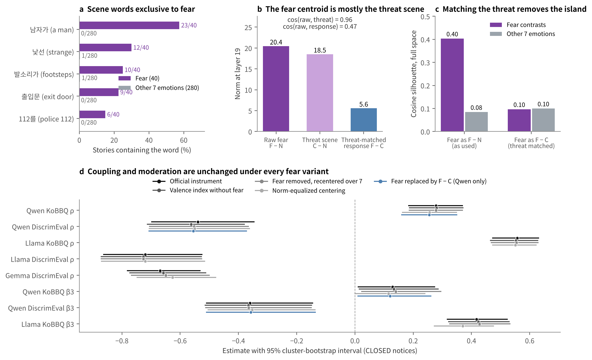

From Korean Dialogues to Emotion Vectors
How the Korean emotion stories were built, how they become emotion directions at layer 19 of Qwen2.5-7B-Instruct, and how the centroids relate to the notice states. Written to the level of detail needed to reproduce each step.
1Measurement layer
All emotion measurements in the v11 analyses of Qwen2.5-7B-Instruct (revision a09a3545, float32, 28 transformer blocks) are read at layer 19. The layer was prespecified at about two-thirds of the model's depth following Sofroniew et al. (2026) and was not selected on social-judgment effects. The replication models use the same rule, layer 21 of 32 for Llama-3.1-8B-Instruct and layer 28 of 42 for Gemma-2-9b-it.
Two kinds of input are read at this layer. For a story, the residual-stream states after the 50th token are averaged. For a benchmark item or a notice, the state at the last position before the answer is taken.

In-distribution accuracy is high at every layer and so cannot select a layer. Transfer to new scenes and to English, which requires emotional meaning rather than shared wording, rises from layer 8, plateaus from layer 11 to 22 and declines near the output. Layer 19 lies on this plateau.
figures/layer_profile/Fig_S_layer_profile_values.csv). The v11 story features were extracted only at layers 0 and 19, so this profile was not recomputed from the v11 extraction.2Source corpus and topics
AI Hub Emotional Dialogue Corpus (감성대화 말뭉치, dataSetSn=86, aihub.or.kr), downloaded on 28 October 2026. The Training and Validation source files contain 58,271 XLSX rows (Training 51,630, Validation 6,641) and 58,268 JSON items (51,628 and 6,640). Four rows without an exactly matching JSON item or with duplicated dialogue were excluded from the topic evidence.
The 58,271 rows carry 12 situation keywords (상황키워드). Each keyword became one research domain.
| Domain | Korean name | English gloss | Corpus keyword | Code | Rows |
|---|---|---|---|---|---|
| D01 | 학업·진로 | Study and career | 학업 및 진로 | S02 | 3,779 |
| D02 | 학교폭력·따돌림 | School violence and bullying | 학교폭력/따돌림 | S03 | 3,642 |
| D03 | 가족관계 | Family relations | 가족관계 | S01 | 4,598 |
| D04 | 취업·직업 경로 | Employment and career path | 진로,취업,직장 | S06 | 5,793 |
| D05 | 직장생활·업무 | Workplace and tasks | 직장, 업무 스트레스 | S10 | 2,900 |
| D06 | 연애·결혼·출산 | Dating, marriage, childbirth | 연애,결혼,출산 | S05 | 4,461 |
| D07 | 부부·자녀 관계 | Spouse and child relations | 대인관계(부부, 자녀) | S07 | 3,854 |
| D08 | 일상 대인관계 | Everyday relationships | 대인관계 | S04 | 12,289 |
| D09 | 생활 재정 | Household finance | 재정 | S13 | 5,519 |
| D10 | 은퇴·노후 재정 | Retirement finance | 재정,은퇴,노후준비 | S08 | 3,051 |
| D11 | 일상 건강 | Everyday health | 건강 | S09 | 3,402 |
| D12 | 질병·죽음과 생활 | Illness, death and life | 건강,죽음 | S11 | 4,983 |
Five topics were selected purposively in each domain, giving 60 topics. Each topic is a researcher reconstruction of one real dialogue, with emotion names and evaluations removed. The source dialogue was linked by an exact match of six dialogue fields between the Training XLSX and JSON, and its row number and talk ID were recorded. The corpus emotion labels were not mapped onto the eight emotions of this study, and no original utterance was copied into a story.
Example, topic T001 음악 실기 평가 (music performance exam), domain D01, keyword 학업 및 진로 (study and career), source Training XLSX row 348, talk ID Pro_00183_00016, adolescent male speaker.
Topics were grouped into semantic families so that near-duplicate topics stay together, and the split is family-disjoint. Forty topics in 16 families form the extraction split used to build the emotion directions, and 20 topics form the evaluation split. A family contains one to six topics.
All 60 topics
D02 T006 학급 내 따돌림 · T007 등하교 길의 또래 관계 · T008 친구 모임에서의 배제 · T009 괴롭힘을 겪은 뒤의 학교생활 · T010 학교폭력 상황의 도움 요청
D03 T011 출생 배경에 관한 가족의 설명 · T012 가족 간 말다툼 · T013 가족 여행 계획 · T014 가족과 사생활 경계 · T015 다쳤을 때 가족의 반응
D04 T016 업무의 누적과 일정 조정 · T017 입사 지원 결과 · T018 상사에 대한 평가 · T019 면접 준비와 참석 · T020 새로 들어온 동료와 소통
D05 T021 직장 내 일상적 배려 · T022 동료의 퇴사 소식 · T023 업무량 조정 · T024 직장 복지 조건 · T025 프로젝트 평가와 보상
D06 T026 연인과 결혼 계획 · T027 연인과 갈등 후 관계 변화 · T028 출장과 배우자·자녀 돌봄 · T029 결혼식 현장의 돌발 상황 · T030 친구에서 연인으로의 관계 변화
D07 T031 자녀의 독립 계획 · T032 혼자 지내는 생활로의 전환 · T033 배우자와 신뢰 문제 · T034 배우자·자녀와 소통 · T035 이혼 후 관계 정리
D08 T036 친구와 금전 거래 이후의 연락 · T037 동료의 뒷말을 알게 된 상황 · T038 경제적 어려움 속 가족 소통 · T039 직장 동료와 존중 문제 · T040 새로운 친구와 만남
D09 T041 지출 습관과 저축 점검 · T042 수술비 마련 · T043 지역사회의 경제적 지원 · T044 일할 능력과 생활비 · T045 퇴직 시점과 재정 계획
D10 T046 은퇴 후 자녀와 생활비 논의 · T047 빌려준 돈의 상환 · T048 배우자의 사업 대출 · T049 은퇴를 앞둔 자금 준비 · T050 노후의 경제적 자립
D11 T051 노화를 바라보는 주변의 반응 · T052 생애주기에 따른 신체 변화 · T053 복약 사실을 가족에게 알리기 · T054 감염병 유행과 일상 건강 · T055 사고 후 신체 기능과 회복
D12 T056 현재의 삶과 미래 계획 돌아보기 · T057 배우자의 질병 이후 가족 관계 · T058 노화와 건강 관리 부담 · T059 신체 기능 변화와 일 수행 · T060 질병으로 달라진 일상
3Emotion set and selection criteria
The eight emotions were chosen by the author rather than derived from the corpus. Sofroniew et al. used 171 emotions; this study keeps eight that separate four threat-related states (panic, fear, anxiety, desperation), two other negative states (sadness, anger) and two positive states (joy, calm). Each emotion has an operational definition that fixes how it differs from its neighbors, and the generation prompts restate these boundaries.
| Emotion | Operational definition (verbatim, v0.1/00_design/emotion_definitions.json) |
|---|---|
| Panic (패닉) | 당장 닥친 위협 아래 주의와 행동 조직이 무너져, 목표와 맞지 않는 동작·순서 착오·멈춤이 나타남 |
| Fear (공포) | 구체적이고 임박한 위협에 주의를 집중하며 회피·방어를 준비함 |
| Anxiety (불안) | 미래의 불확실한 결과를 반복적으로 예상하며 확인·대비·걱정이 이어짐 |
| Desperation (절망) | 중요한 목표를 잃을 가능성이 커지고 선택지가 소진되며 마지막 수단까지 붙잡는 절박한 상태 |
| Sadness (슬픔) | 이미 발생한 상실·이별·실망을 받아들이며 빈자리와 지난 일을 되짚음 |
| Anger (분노) | 부당함·침해·책임 귀속에 반응하여 시정이나 항의를 요구함 |
| Joy (기쁨) | 긍정적인 사건·연결·성취를 반기고 누군가와 나누거나 다시 경험하려는 반응 |
| Calm (평온) | 각성은 낮지만 안정되고 유연한 주의와 여유 있는 행동이 드러남 |
Fear was later narrowed to an immediate bodily threat from a person (v0.11/provenance/fear_definition.json).
4Story generation
The final stories were produced in stages on the 40 extraction topics. Each stage used the OpenAI Responses API with a strict JSON schema, no temperature and no seed, so reproducibility rests on the saved requests, responses and selection records rather than on deterministic regeneration.
| Version | What was generated | Model | Settings |
|---|---|---|---|
| v0.4 | First full set, 60 topics × 8 emotions, a separate neutral for each pair (superseded) | gpt-5.4-mini-2026-03-17 | reasoning low, up to 4 attempts |
| v0.6 | Per topic, three neutral candidates and desperation, anxiety, anger and sadness sharing one core sentence; one neutral kept by a formal rule | gpt-5.4-2026-03-05 | reasoning low, 4 workers, up to 6 attempts |
| v0.7 | Human review of the v0.6 neutral and four-emotion stories | none | no generation |
| v0.8 | Panic, fear, joy and calm added to each topic with the reviewed neutral fixed | gpt-5.4-2026-03-05 | reasoning low, up to 10 repair attempts |
| v0.9–v0.10 | Fear stories revised to the immediate bodily-threat definition, with matched panic and threat-control stories | gpt-5.4-2026-03-05 | see Fig. 5 |
| v0.11 | Accepted release, 320 main pairs and 80 auxiliary pairs | none | no generation |
One request per topic. The neutral selection rule kept the candidate that passed the most formal checks and, on ties, the one closest in length to the four emotion stories, without using any model activation. For T001 the third candidate was kept at the first attempt.
generate_contrasts.py, gpt-5.4-2026-03-05 (exact string for T001)한국어 감정 벡터의 전문가 검수용 대조 이야기 초안을 작성한다. 사용 가능한 주제는 T001의 음악 실기 평가 하나뿐이다. 인칭은 1인칭다. 기존 평가 이야기나 모델 판정은 제공하지 않으며 참고하지 않는다. 동일 인물·장소·중요한 목표·핵심 사물을 공유하는 중립 후보와 네 감정 조건을 작성한다. shared_core에는 공통 사건의 사실만 한 문장으로 적고 모든 글에 정확히 같은 문장으로 포함한다. 하나의 구체적 생활 사건을 중심으로 서사를 연결한다. 시간·결과 확정 여부·책임 귀속·이용 가능한 자원은 감정 구분에 필요한 만큼 달라질 수 있지만 allowed_fact_differences와 각 condition_facts에 전부 기록한다. 순수 감정만 달라진 인과 대조쌍이라고 주장하지 않는다. 중립 후보 세 개와 절망(desperation)·불안·분노·슬픔 본문을 쓴다. 각 본문은 독립적으로 읽히는 한 문단, 4~6문장, 공백 포함 170~350자이며 230~290자를 목표로 한다. 네 감정 글의 길이는 비슷하게 맞춘다. 중립 후보는 약 220자, 260자, 300자로 서로 다른 구체적 사실 묘사를 쓴다. 중립에는 주관적 내면·위협·손실의 평가·안심을 넣지 않는다. 중립이라는 자기 선언을 하지 않는다. 공통 사건 자체가 감정을 유발할 수 있으므로 중립성은 전문가가 별도 검수한다. desperation은 중요하고 구체적인 목표를 앞부분에 드러내고, 최소 두 개의 실질적 해결 경로가 이미 실패했음을 적는다. 시간 또는 자원이 줄어드는 제약 아래 비용을 감수하는 구체적 행동을 실제로 실행하며 끝낸다. 번호에 손만 얹기, 기다리기, 다시 확인하기, 문장 지우기만으로 끝내지 않는다. 마지막, 절망, 절박 같은 표지 단어로 대신하지 않는다. 네 감정 조건 중 이 조건만 대안 소진을 필수로 한다. anxiety는 결과가 아직 불확실하고 사용할 수 있는 대안이 남아 있는 상태에서 예상·확인·대비한다. 모든 방법이 실패했다는 문구를 넣지 않는다. anger는 누가 어떤 규칙·약속·권리를 어겼는지와 그 책임 귀속이 명확하고, 실제 시정·항의·책임 요구 행동을 한다. 단순한 빠른 행동이나 목표 추구만으로 분노를 표시하지 않는다. sadness는 이미 발생해 되돌리기 어려운 손실을 명확히 하고 빈자리·기억·생활의 변화를 되짚는다. 목표 복원을 위한 다급한 마지막 시도는 하지 않는다. 체념 상태 자체를 desperation으로 쓰지 않는다. 모든 본문에서 감정 이름과 직접 동의어를 피하고 행동·생각·감각·환경으로 드러낸다. 폭력·재난·생명 위협으로 모든 주제를 과장하지 않는다. 모든 문장을 같은 템플릿으로 반복하지 않는다. 중요한 단서는 본문 한 구절에만 몰지 않고 앞·중간·뒤에 자연스럽게 분산한다. 말미에 마지막이라는 단어를 붙여 감정을 만든 것으로 처리하지 않는다. 각 감정의 goal_span, diagnostic_spans, actual_action_span은 반드시 해당 본문에서 정확히 복사한다. desperation의 diagnostic_spans에는 실패한 서로 다른 경로 두 개와 시간·자원 제약이 드러나는 부분을 포함한다. sadness의 actual_action_span은 되짚는 행동으로 쓰고 목표 복원 시도가 아니어야 한다. 이 메타데이터는 생성 모델의 자기 설명이지 전문가 판정이 아니다. 사람의 검수 결과를 만들어내지 않는다. JSON만 반환한다.
The reviewed neutral and the shared core sentence were passed in unchanged, and the length band was set from the neutral length \(n=270\) as \([\max(170,\lceil0.85n\rceil),\,\min(350,\lfloor1.15n\rfloor)]=[230,310]\).
generate_additions_v2.py, gpt-5.4-2026-03-05 (exact string for T001, attempt 1)한국어 감정 벡터용 동일 맥락 대조 이야기의 부족한 감정 조건을 추가 작성한다. 주제는 T001 음악 실기 평가, 인칭은 1인칭다. 기존 평가 자료와 모델 점수는 입력에 없으며 사용하지 않는다.
확정한 공통 문장을 모든 글에 정확히 한 번 포함한다. 나는 음악학원 연습실에서 이번 주 실기 평가에 낼 피아노 곡을 준비했다.
공유 인물·장소·핵심 사물은 다음과 같다. 인물: 나 / 장소: 음악학원 연습실 / 핵심 사물: 실기 평가에 낼 피아노 곡이 적힌 악보, 피아노, 연습실 예약 정보
검수 완료된 중립 원문은 다음과 같으며 수정하지 않는다. 나는 음악학원 연습실에서 이번 주 실기 평가에 낼 피아노 곡을 준비했다. 입실 카드로 문을 열고 들어가자 전 사람이 놓고 간 보조 의자를 벽 쪽으로 옮긴 다음, 창문을 조금 열어 두었다. 첫 십 분은 손풀기 스케일을 하고, 그다음에는 악보의 반복 기호가 있는 부분만 접어서 바로 보이게 만들었다. 빠른 구간은 메트로놈 숫자를 두 칸씩 올리며 맞췄고, 느린 구간은 박자기를 끈 채 손 모양만 확인했다. 마칠 때는 악보를 파일에 넣고 피아노 덮개를 닫은 뒤 다음 예약자에게 방을 넘겼다.
이번 요청에서 작성할 조건은 ['panic', 'fear', 'joy', 'calm']다. 각 글은 독립적인 한 문단, 4~6문장, 공백 포함 230~310자다. 실제 중립 글자수는 270이다. 가운데 값인 270자 정도를 목표로 한다. 앞선 네 감정 이야기는 수정하지 않는다. 같은 중심 사건과 중요한 목표를 유지하되 시간·결과·책임·자원은 필요한 만큼 바꾸고 condition_facts에 전부 기록한다. 이것을 감정만의 순수 인과 대조라고 주장하지 않는다.
panic은 눈앞의 구체적 위협 아래 행동의 순서·주의가 무너지고 목적과 맞지 않는 행동, 순서 착오나 멈춤이 실제로 드러나야 한다. 비명이나 과장만으로 대신하지 않는다.
fear는 구체적이고 임박한 위협에 주의를 집중하며 목적에 맞는 회피·방어 행동을 조직한다. panic과 각성 크기만으로 구분하지 않는다. 두 조건 모두 요청에 있으면 같은 종류의 위협을 사용하고 핵심 차이는 행동 조직의 유지 여부가 되게 한다. 출생 배경·노후·일상 주제를 모두 화재·죽음·강도로 바꾸지 말고 해당 주제 안에서 현실적인 노출·안전·중요 목표의 위협을 사용한다. 다급한 목표 달성이나 실패 경로 소진만을 fear로 쓰지 않는다.
joy는 긍정적 사건·연결·성취를 반기고 나누거나 다시 경험하려는 접근 동기가 드러난다. 위협이 사라진 안도만으로 쓰지 않는다.
calm은 각성이 낮으면서 안정되고 유연한 주의, 서두르지 않는 여유와 긍정적인 안정감이 드러난다. 단순한 사물 정리·절차 나열의 중립 글과 구분한다.
본문에는 감정 이름·직접 동의어를 쓰지 않는다. 패닉, 공포, 두렵다, 두려움, 무섭다, 불안, 걱정, 절망, 절박, 슬픔, 분노, 화가 나다, 기쁨, 기쁘다, 행복, 평온을 행동과 생각의 구체적인 묘사로 대체한다. 감정의 차이를 단어 하나나 마지막 문장 하나에만 몰지 않는다. 폭력적 과장은 피하고 한국어와 생활 상황을 자연스럽게 쓴다.
goal_span, diagnostic_spans 2개 이상, actual_action_span은 해당 text에서 정확하게 복사한다. condition_facts는 사실 변경 기록이다. 이것은 생성 모델의 자기 설명이며 인간의 검수 결과를 만들지 않는다. 직전 초안이 너무 길면 characters_to_remove_positive_or_add_negative의 양수만큼 글자수를 줄이고, 음수면 그 절댓값만큼 구체적 묘사를 추가한다. 감정 단서와 공통 문장은 유지한다. 직전 초안의 자동 검사 정보는 다음과 같다. {"panic": {"previous": null, "checks": {}, "actual_char_count": null, "target_char_count": 270, "characters_to_remove_positive_or_add_negative": null}, "fear": {"previous": null, "checks": {}, "actual_char_count": null, "target_char_count": 270, "characters_to_remove_positive_or_add_negative": null}, "joy": {"previous": null, "checks": {}, "actual_char_count": null, "target_char_count": 270, "characters_to_remove_positive_or_add_negative": null}, "calm": {"previous": null, "checks": {}, "actual_char_count": null, "target_char_count": 270, "characters_to_remove_positive_or_add_negative": null}}Every story had to be one paragraph of 4 to 6 sentences and 170 to 350 characters, contain the shared core sentence exactly, keep a length ratio of 0.85 to 1.15 to its neutral story, contain none of the forbidden emotion words (a fixed regular expression covering the eight emotion names and their direct synonyms in Korean and English), and reproduce every self-reported evidence span verbatim. A failed check triggered a new attempt with the failure details appended.
5Counts
Within a topic, the eight emotion stories share one neutral story, so the 320 pairs reuse 40 neutral texts. The model was run 640 times (each pair's emotion and neutral story). The v0.11 release adds 80 auxiliary pairs that the v11 analyses did not use.
6From stories to vectors
The centroids recomputed here from the stored story features equal the instrument's raw_matched_class_means exactly (maximum absolute difference 0).
The instrument then projects out the neutral principal components that explain 50% of neutral token variance (\(P_\perp=I-UU^\top\)), centers across the eight emotions and normalizes to unit length.
Figures 2 to 4 show the raw centroids \(c_e\), before these steps, so that magnitudes and the role of the neutral story stay visible.
Fig. 2One category, from dialogue to centroid
The pipeline is traced for one domain (D01, 학업 및 진로, study and career), one topic (T001) and two emotions, anger and joy.
Keyword 학업 및 진로 (code S02, 3,779 rows), topic T001 음악 실기 평가, source utterance "음악 실기 완전 망쳤어. 나는 왜 잘하는 게 하나도 없는지 모르겠다."
Anger came from the v0.6 prompt (Task 4.1) and joy from the v0.8 prompt (Task 4.2), both with gpt-5.4-2026-03-05 at the first attempt. Both contain the shared core sentence and share the neutral story below.
| Vector (T001 anger) | First 8 of 3,584 dimensions | Norm |
|---|---|---|
| \(\bar s_{t,\text{anger}}\) anger story | -0.026, +0.429, +0.010, +0.393, -0.099, -0.225, -0.004, +0.547 | 50.27 |
| \(\bar s_{t,\text{neu}}\) neutral story | +0.148, +0.053, +0.222, +0.287, +0.164, -0.208, -0.302, +0.427 | 50.31 |
| \(\Delta_{t,\text{anger}}\) contrast | -0.174, +0.376, -0.211, +0.106, -0.262, -0.017, +0.298, +0.120 | 27.53 |
| \(c_{\text{anger}}\) centroid (40 topics) | +0.027, +0.101, -0.063, -0.022, -0.196, -0.002, +0.007, -0.052 | 12.95 |
| \(c_{\text{joy}}\) centroid (40 topics) | +0.010, +0.061, -0.083, -0.113, -0.194, +0.059, +0.062, +0.062 | 9.66 |

The plane is spanned by the anger centroid and the part of the joy centroid orthogonal to it (Gram–Schmidt), so both centroids are shown without loss and the neutral story sits at the origin.
The T001 anger contrast lies at (20.39, -3.92), the anger centroid at (12.95, 0.00) and the joy centroid at (4.76, 8.40). Because the projection is linear, the centroid of the 40 projected stories equals the projection of the centroid.

Anger contrasts lie along the anger direction, with a median cosine of 0.64 to their centroid (range 0.49 to 0.77), and joy contrasts have a median cosine of 0.58 to theirs. The two centroids have a cosine of 0.49 (about 60°), so they share a substantial common component while pointing in distinguishable directions. On average 64% of the length of an anger contrast and 58% of a joy contrast lie in this plane.
Fig. 3Do stories cluster by emotion or by topic?
UMAP (cosine metric, 15 neighbors, min_dist 0.1, random_state 20261101) was applied to the 320 emotion stories, once to the story activations and once to the matched contrasts. Clustering is also measured in the original 3,584-dimensional space with the cosine silhouette score for emotion labels and for topic labels.

| Representation | Silhouette by emotion | Silhouette by topic |
|---|---|---|
| Story activations \(\bar s_{t,e}\) | 0.17 | 0.03 |
| Matched contrasts \(\Delta_{t,e}\) | 0.12 | 0.22 |
Why contrasts cluster by topic. All eight contrasts of topic \(t\) subtract the same neutral story, so they share the offset \(-\bar s_{t,\text{neu}}\),
Differences between emotions within a topic are unaffected, and averaging over topics removes the topic offsets from differences between centroids, \(c_e-c_{e'}=\frac{1}{40}\sum_t(\bar s_{t,e}-\bar s_{t,e'})\). The centering across emotions in Task 6.2 removes the remaining shared neutral component. The topic clustering of individual contrasts therefore does not carry over to the emotion directions.
Why fear stands apart. Fear is the only emotion whose stories carry a scene that no other emotion shares. Section Fig. 5 analyzes the cause and tests the remedy.
Fig. 4Centroids in the notice-state plane
The raw centroids of all eight emotions were projected onto the plane of the notice-only states (the PCA basis \(B\) of the manuscript's Figure 1, \(B^{\top}B=I_2\)), \(y_e=B^{\top}c_e\), with the neutral centroid placed at the reference notice.

The strength of emotion \(e\) in state \(k\) is the full-dimensional projection \(\langle\delta_k,c_e/\lVert c_e\rVert\rangle\), not the planar distance, which is only a lower bound, \(\lVert B^{\top}(\delta_k-c_e)\rVert\le\lVert\delta_k-c_e\rVert\). Only 7% to 20% of each notice-state change and 36% to 90% of each centroid lie in this plane.
Fig. 5Why fear forms an island, and the remedy
Cause. In v0.10 only the fear stories were rewritten under a narrower definition, an immediate bodily threat from a person. The instruction assigned each topic a physical-threat motif (for T001, 뒤따라오는 사람과 가까워지는 발소리 (footsteps of a person closing in)), whereas the other seven emotions kept threats or events that belong to the topic. The fear stories therefore add a second actor, a pursuit and a blocked exit, which the neutral story of the same topic does not contain.
requests/T001.a1.json; accepted at attempt 3; reasoning low, strict JSON schema physical_fear)한국어 감정 벡터의 공포 정의를 엄격하게 적용한다. 공포는 생존·신체 안전에 대한 구체적이고 임박한 위험을 지각해 즉각 밀려오는 반응이다. 누군가 자신을 해치거나 다치게 할 수 있는 현재의 위협이다. 마감·금전·정보노출·평판 문제만으로 대신하지 않는다. 임상적 공황발작 진단을 작성하는 작업은 아니다.
추출용 주제 T001 음악 실기 평가, 인칭 1인칭, 고정 공통 문장 나는 음악학원 연습실에서 이번 주 실기 평가에 낼 피아노 곡을 준비했다.
기존 중립은 변경하지 않는다. 나는 음악학원 연습실에서 이번 주 실기 평가에 낼 피아노 곡을 준비했다. 입실 카드로 문을 열고 들어가자 전 사람이 놓고 간 보조 의자를 벽 쪽으로 옮긴 다음, 창문을 조금 열어 두었다. 첫 십 분은 손풀기 스케일을 하고, 그다음에는 악보의 반복 기호가 있는 부분만 접어서 바로 보이게 만들었다. 빠른 구간은 메트로놈 숫자를 두 칸씩 올리며 맞췄고, 느린 구간은 박자기를 끈 채 손 모양만 확인했다. 마칠 때는 악보를 파일에 넣고 피아노 덮개를 닫은 뒤 다음 예약자에게 방을 넘겼다.
이번 상황 배정 {"threat_family": "P01", "motif": "뒤따라오는 사람과 가까워지는 발소리", "lighting": "밝은 실내 또는 낮", "night": false}
공통 문장으로 설정한 인물·장소·사물과 연결해 현실적인 신체 위협을 새로 구성한다. 기존 일상 주제와 신체 위협이 자연스럽게 연결되지 않는 부분은 context_changes_and_fit_concerns에 숨김없이 기록한다. 사건의 위협 범주가 달라진 사실도 기록한다. 이 보완은 전국민 대표 상황을 만드는 작업이 아니다.
shared_physical_threat_sentence에는 현재의 감각 단서와 사람에 의한 즉각적 신체 위해 가능성이 구체적으로 드러나는 한 문장을 적는다. 주인공의 느낌 대신 사건 사실만 쓴다. 예를 들어 어둠 속 발소리는 단지 소리가 나는 것이 아니라 자신이 멈추면 멈추고 방향을 바꾸면 따라 꺾이는 등 바로 다가오는 추격의 단서를 주되, 모든 글을 같은 표현으로 만들지 않는다. 가해 의도가 객관적으로 증명돼야 한다는 뜻은 아니지만 단순 미래 상상만으로 쓰지 않는다. 잔인한 상해 묘사·공격 방법의 설명은 필요 없다.
세 글 fear, panic_counterpart, physical_context_control에 고정 공통 문장과 shared_physical_threat_sentence를 정확히 한 번씩 똑같이 넣는다. 가해자·위해 종류·거리·위협 시점과 남은 출구는 세 글에서 동일하다. 위협이 더 세기 때문에 패닉이 되는 구조로 쓰지 않는다.
fear는 감각 단서를 위험 신호로 읽는 순간의 좁아지는 주의·몸의 반응과, 피하거나 거리를 벌리거나 도움을 청하는 실제 방어가 함께 나타난다. 강하고 갑작스러운 반응이지만 행동의 목적과 순서는 유지된다. 마지막까지 위협과 경계를 남기며 안전 확보·안도·성공담으로 닫지 않는다.
panic_counterpart는 동일한 신체 위협에 순서 착오, 목표와 맞지 않는 동작이나 멈춤 등 행동 조직의 붕괴가 실제로 드러난다. 공포의 강도만 늘리는 글이 아니다. 이는 기존 패닉 벡터를 교체하기 위한 자료가 아니라 위협 내용을 맞춘 보조 대조 자료다.
physical_context_control은 동일한 위협 사건과 환경·위치·객관적 움직임을 사실적으로 기술하되 위험에 대한 내적 평가·신체 반응·감정 표현을 덧붙이지 않는다. 감정이 없다고 선언하지 않는다. 이 글은 위협 내용 통제 후보이며, 위협 그 자체가 감정을 유발할 수 있으므로 중립성이 입증됐다고 주장하지 않는다.
각 글은 한 문단 4~6문장, 공백 포함 230~310자로 270자 정도를 목표로 한다. 길이가 넘치면 공유 문장 두 개는 유지하고 나머지 묘사를 줄인다. 본문에서 패닉·공포·두려움·두렵다·무섭다·불안·걱정·절망·절박·슬픔·분노·기쁨·행복·평온 같은 감정 이름과 직접 동의어를 피한다. 사실의 위협과 반응으로 드러내며 문체를 어색하게 과장하지 않는다.
fear의 perception_span, reaction_span, defense_span, continuing_threat_span은 각각 감각적 위협 인지, 즉각 반응, 목적 있는 방어, 말미까지 남는 위협·경계의 구절을 text에서 정확히 복사한다. condition_facts에 상황 사실을 기록한다. 생성 설명은 인간 판정이 아니다. 자동 교정 정보 {"previous": null, "actual_lengths": {}, "failed": []}The same request produced two auxiliary stories that share the threat sentence word for word, a panic counterpart \(P^{c}\) and a threat-content control \(C\) that reports the same events without appraisal or bodily reaction. These 80 stories form extraction_auxiliary in v0.11 and allow the fear contrast to be decomposed exactly,

| Diagnostic, Qwen2.5-7B-Instruct, layer 19 | Fear | Other seven |
|---|---|---|
| Nearest neighbor has the same emotion, layer 0, story activations | 0.98 | 0.05–0.50 |
| Centroid norm \(\lVert c_e\rVert\) | 20.47 | 9.55–12.95 |
| Mean cosine of a story contrast to its own centroid | 0.78 | 0.54–0.67 |
| Cosine of raw fear with the threat-scene term | 0.96 | – |
| Cosine of raw fear with the threat-matched response | 0.47 | – |
| Silhouette of fear as \(F-N\) / as \(F-C\) | 0.40 / 0.10 | 0.08 / 0.10 |
Three findings follow. First, the island appears at layer 0, before any contextual processing, so it is driven by vocabulary and scene rather than by an emotion computed deep in the model. Second, about 96% of the direction of the fear centroid is the threat scene, and the threat-matched response is only 5.6 units long. Third, because the fear centroid is about twice as long as the others, it dominates the equal-emotion centering of Task 6.2, which is why the official fear axis has a cosine of \(-0.66\) with the anxiety axis. Replacing fear by the threat-matched response removes both effects (cosine with anxiety \(-0.15\); silhouette 0.10, equal to the other emotions).
Remedy and robustness. The registered analyses must keep the frozen instrument, so the remedy was applied as a sensitivity analysis on the same stored activations, with no new inference. Variants A1 and A2 remove fear from the valence index or from the centering, A3 unit-normalizes each emotion before centering so that no emotion dominates, and A4 replaces fear by the threat-matched response (available only for Qwen, whose auxiliary stories were encoded).
| Variant | KoBBQ \(\rho\) | KoBBQ \(\beta_3\) | DiscrimEval \(\rho\) | DiscrimEval \(\beta_3\) | \(r\) with official \(\Delta V\) |
|---|---|---|---|---|---|
| Qwen2.5-7B-Instruct | |||||
| Official instrument | +0.28 [+0.18, +0.37] | +0.13 [+0.01, +0.27] | −0.54 [−0.70, −0.35] | −0.36 [−0.51, −0.15] | – |
| Valence index without fear | +0.28 [+0.19, +0.37] | +0.13 [+0.02, +0.29] | −0.56 [−0.71, −0.38] | −0.37 [−0.51, −0.15] | 0.993 |
| Fear removed, recentered over 7 | +0.28 [+0.19, +0.37] | +0.14 [+0.02, +0.29] | −0.55 [−0.71, −0.37] | −0.36 [−0.51, −0.15] | 0.988 |
| Norm-equalized centering | +0.26 [+0.16, +0.35] | +0.12 [+0.00, +0.24] | −0.55 [−0.71, −0.36] | −0.35 [−0.50, −0.14] | 0.985 |
| Fear replaced by F − C | +0.26 [+0.16, +0.35] | +0.12 [+0.01, +0.26] | −0.56 [−0.71, −0.37] | −0.36 [−0.51, −0.14] | 0.984 |
| Llama-3.1-8B-Instruct | |||||
| Official instrument | +0.56 [+0.47, +0.63] | +0.42 [+0.32, +0.52] | −0.72 [−0.86, −0.53] | +0.15 [−0.06, +0.36] | – |
| Valence index without fear | +0.55 [+0.47, +0.63] | +0.42 [+0.32, +0.53] | −0.73 [−0.87, −0.53] | +0.16 [−0.04, +0.37] | 0.995 |
| Fear removed, recentered over 7 | +0.55 [+0.47, +0.63] | +0.43 [+0.33, +0.53] | −0.73 [−0.87, −0.53] | +0.17 [−0.04, +0.38] | 0.990 |
| Norm-equalized centering | +0.55 [+0.47, +0.62] | +0.37 [+0.27, +0.48] | −0.72 [−0.87, −0.52] | +0.14 [−0.07, +0.36] | 0.976 |
| Gemma-2-9b-it | |||||
| Official instrument | +0.06 [−0.06, +0.18] | −0.08 [−0.32, +0.19] | −0.67 [−0.78, −0.53] | −0.29 [−0.69, +0.10] | – |
| Valence index without fear | +0.06 [−0.06, +0.18] | −0.07 [−0.32, +0.19] | −0.66 [−0.77, −0.51] | −0.25 [−0.65, +0.15] | 0.992 |
| Fear removed, recentered over 7 | +0.06 [−0.06, +0.17] | −0.06 [−0.30, +0.18] | −0.65 [−0.77, −0.50] | −0.22 [−0.63, +0.18] | 0.986 |
| Norm-equalized centering | +0.07 [−0.06, +0.18] | −0.12 [−0.36, +0.18] | −0.63 [−0.75, −0.48] | −0.19 [−0.59, +0.19] | 0.972 |
Across all variants and models, the change in the valence index correlates at least 0.97 with the official index, and every estimate keeps its sign. Each interval that excluded zero still excludes it, with one boundary case, the Qwen KoBBQ \(\beta_3\), already the weakest effect, whose lower bound reaches 0.000 (\(p=0.05\)) under norm-equalized centering. The fear scene artifact therefore distorts the geometry of the fear axis and the visualizations, but not the claims of the paper, which rest on the valence index.